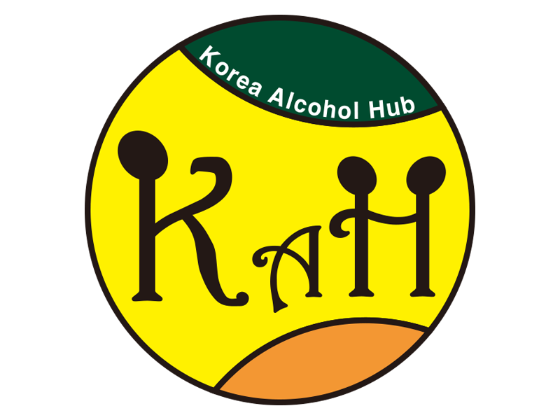

열정적이고 패기넘치는 신입 웹디자이너입니다.
저는 현재 UI/UX 디자인에 대한 지식을 쌓고 있고, 많은 경험을 하고 싶습니다. 제 자신을 업그레이드하며 회사에 많은 도움이 되고 싶습니다. 일러스트레이터, 포토샵, 인디자인, 프리미어 프로, 에프터 이펙트, 비쥬얼 스튜디오 코드 등 여러 툴을 다루어 비즈니스의 큰 자산이 되고 싶습니다. 개인으로서, 회사는 제가 창의적이고, 재미있고, 열정적이라는 것을 알게 될 것이라 확신합니다.
저는 깔끔한 스타일링을 좋아하고, 웹사이트를 CSS와 HTML5를 이용해서 제작이 가능합니다. 저는 제 고객의 필요에 따라 멋진 결과물을 만드는 것을 좋아합니다. 저는 항상 고객의 니즈를 최우선으로 생각하여 결과물을 만들 것입니다.
전공과는 무관하나 대학교 동아리에서 프로그램 기획과 SNS 운영, 맛집 블로그 운영, 취미로 개인 방송과 영상 편집을 했던 경험을 토대로 컴퓨터 관련 새로운 업무를 해보고 싶어서 지원했습니다.
부산은 인천과 함께 무역의 중심지기 때문에 국제통상학부를 선택했습니다. 비단 무역만 학습하는 것이 아닌, 경영과 경제도 배울 수 있어서 좋았습니다. 무엇보다 많은 좋은 인연들을 만날 수 있어서 좋았습니다.
부산에서 태어나서 계속 지내며 국립고등학교를 들어갔습니다. 2학년 올라갈 때 문과 이과의 선택의 기로에서 결정을 잘 못했었는데, 경영 관련 공부를 해보고 싶어서 문과를 선택했습니다.
취득한 자격증입니다.
동아리에서 만난 지인의 소개로 행사 보조 스텝을 하게되면서 1년 넘게 주말에 부산, 경남, 제주 쪽에서 행사가 잡힐 때마다 계속 참가했고, 좋은 인연들을 많이 만날 수 있었습니다. 더해서 서비스의 중요성을 다시 한 번 깨닫는 경험이었습니다.
코로나19로 인하여 외부 활동이 어려운 상황에서 그동안 모은 돈으로 데스크톱을 구매, 취미로 개인 방송을 시작했습니다. 제가 방송한 것들을 살짝 편집해서 유튜브에도 업로드했습니다. 현재는 편집본은 거의 없지만, 다시 틈틈이 할 예정입니다.
블로그와 맛집 탐방에 흥미가 생겨 1년 동안 꾸준히 맛집 블로그를 운영했습니다. 열심히 업로드한 결과 수익 창출 승인도 났습니다. 현재는 쉬고 있지만 다시 틈틈이 업로드할 예정입니다.
2019년에 회장, 2020년에 감독 겸 총무로 과에 있는 야구동아리를 맡았습니다. 야구 교육은 물론 여러 프로그램들을 기획하고 자체 SNS를 운영하였으며 자금 관리까지 맡았습니다. 이는 결과적으로 많은 좋은 사람들을 만나게 해주었고, 저 자신도 한 걸음 더 발전하는 좋은 계기였습니다.
영업을 배우고 싶어서 LG 유플러스 대리점에 입사해서 휴대폰과 인터넷 등을 판매했습니다. 큰 돈을 벌지는 못했지만 그래도 고객을 항상 최우선으로 생각하는 영업을 배울 수 있어서 값진 경험이었습니다.
전차조종수로 보직이 정해져서 열심히 일하고 있었는데, 작전상황병으로 보직이 바뀌면서 현장 업무와 행정 업무 모두 경험했습니다. 여러 방면을 배울 수 있었고 나라에 봉사할 수 있어서 좋았습니다.
군입대 전 아르바이트를 해야겠다 생각이 들어서 집 주변의 맘스터치에서 아르바이트를 했습니다. 당시 제일 좋아하는 브랜드였는데 일하면서 원없이 먹어서 행복했습니다.
1학년 여름방학, 2학기에 쓸 용돈을 벌기 위해서 거제도에 있는 조선소에 들어갔습니다. 한여름에 노동을 하며 돈과 노동에 대한 가치를 깨달았고 배에 대해서도 많이 알게되어 좋은 경험이었습니다.
부경대학교에 입학하고 국가근로에 합격해서 학교 내에 있는 카페에서 일했습니다. 여러 사람들을 만나게 된 좋은 기회였습니다.
양산의 재수학원에서 1년을 보내고, 마침내 수능을 치르게 되었습니다. 대학교 입학 전까지 뭐라도 하는게 맞다고 생각해서 PC방에서 아르바이트를 하게 되었습니다. TOEIC 공부도 병행하여 당시에 900점을 넘겼습니다. 첫 아르바이트의 시작이었던 만큼 실수도 많았지만 긍정적인 마음가짐으로 잘 이겨냈습니다.